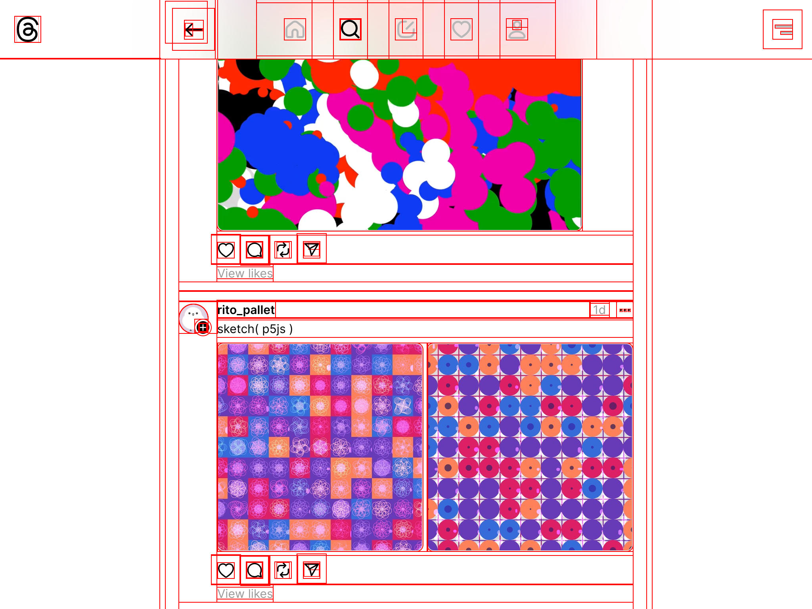

Here’s a quick & simple way to show all element bounds on a page.
javascript:(a=(d=document).createElement('style')).innerHTML='*{outline:solid 1px red}';d.head.append(a)
The bookmarklet: ▤outlinify

Example result on threads.net
Not sure how to use it? Save or drag the following link into your bookmarks:
☝
If you prefer different styles: